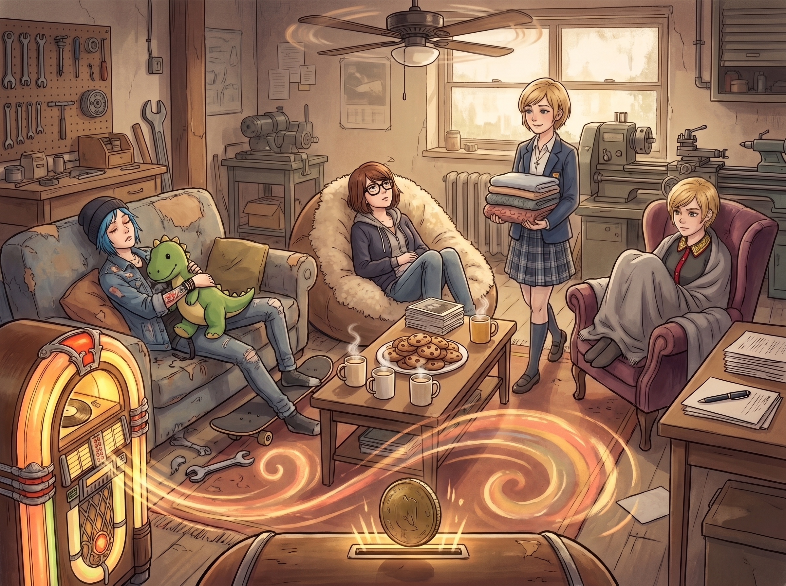

重力加倍術

當點唱機投幣孔落入一枚磨損的硬幣，音響裡傳出的不再是激昂的合成器狂想，而是帶著黑膠炒豆雜音的溫暖下潛 Lo-Fi 爵士鼓點與輕柔吉他撥弦時，整座工坊的生產力在三秒鐘內直接斷崖式歸零。
那種特有的低保真慵懶氛圍混著溫柔的女聲哼唱，宛如給四人施加了一道無差別的「全域重力加倍術」。
一、骨牌式集體物理躺平
原本手裡還拿著一把梅花扳手準備去校準車床的 Chloe，在聽到那句唱著滿身沾著鐵屑與油污、卻在旋律裡輕輕轉了個圈、悠悠踩上滑板的歌詞時，整個人像一塊被曬化的黃油般癱軟在帶輪滑板上。她把扳手隨手往地毯邊緣一扔，雙手抱頭，用腳尖輕輕一點牆壁，連人帶滑板慢悠悠地滑到沙發底下，拉過一隻巨大的恐龍玩偶墊在肚子上，發出一聲極度舒服的呻吟：「完了……長官……這鼓點有毒……老娘的每一根脊椎骨都在命令我停止一切形式的重工業勞動……」
Max 剛從暗房端出定影盤，耳邊那句描繪著星光靜靜灑落在青春臉龐上的旋律緩緩流過，雙腿直接失去了邁向乾燥架的意志。她把洗好的相紙小心翼翼地擱在茶几邊，整個人順勢向前一撲，陷進鋪滿羊毛毯的懶人沙發最深處，黑框眼鏡歪在一旁，下巴抵著抱枕，綠眼睛半睜半閉地盯著天花板上的老風扇慢速旋轉。
作為大股東的 Victoria 原本手裡握著鋼筆，正要在季度採購報表上簽字。然而當那句唱著一頭藍色麋鹿困在港灣邊、天使笑著把心事寫在信紙上方的旋律悠悠飄過時，她簽字的手指僵在半空。掙扎了不到五秒，名媛冷冷地將萬寶龍鋼筆往桌上一扣，優雅地脫掉高跟鞋，整個人蜷縮進單人天鵝絨扶手椅裡，拉起羊絨毯蓋到下巴，只露出一張寫滿「今天誰也別想讓我審批一張發票」的厭世精緻臉龐：「……這是合理的神經系統降頻修復，今天工坊停止一切資本運作。」
只有 Kate 帶著溫柔至極的微笑，在 Lo-Fi 節奏裡踩著軟綿綿的步伐穿梭。她甚至沒有試圖叫醒任何人，而是給每人發了一條剛烘乾、帶著薰衣草香氣的軟絨厚毛毯，並在茶几中央放上一大盤剛烤好的棉花糖巧克力軟餅乾與四杯冒著熱氣的洋甘菊燕麥奶。
二、耍廢模式下的靈魂神遊
車廂內光線被百葉窗切成溫柔的金斑，四個人各佔據客廳一角，進入了極致的半夢半醒狀態。
「喂……大股東，」Chloe 趴在滑板上，用手指有一下沒一下地戳著地毯上的流蘇，聲音含糊不清，「妳說作者是不是在暗指妳那個比鐵板還硬的脾氣，終於在我們的花園裡被泡軟了？」
Victoria 連眼睛都懶得睜開，把臉往羊絨毯裡縮了縮，聲音悶悶地傳出來：「閉嘴，Price……再發出聲音，我就把點唱機換成西雅圖歌劇院的詠嘆調，逼妳起來做一百個深蹲……」
「但真的好安靜啊……」Max 側過頭，臉頰貼著柔軟的絨布，看著窗外威拉米特河畔掠過的海鷗，輕聲呢喃，「好像整個世界都跟著這首歌慢下來了……」
「因為大家這幾個月都辛苦了呀，」Kate 跪坐在地毯上，溫柔地把一塊溫熱的餅乾塞進 Max 嘴裡，又把一杯燕麥奶推到 Chloe 手邊，「偶爾像這樣什麼都不做，聽聽歌、發發呆，也是一種很重要的修復呢。」
三、凝固在時光裡的波特蘭午後
點唱機一遍又一遍地循環著這首 Lo-Fi 新曲。低沉溫暖的鼓點、輕輕撥動的吉他琴弦，與窗外偶爾穿過鐵道的微風融為一體。二號車廂的金屬車床安靜地立在陽光下，暗房的紅燈靜靜熄滅，而客廳裡橫七豎八地躺著四個徹底被治癒包裹的女孩。
沒有沉重的過往，沒有緊迫的日程，只有烘焙的香氣、微涼的初秋，以及在空氣中靜靜流淌的、永不褪色的溫暖與自由。